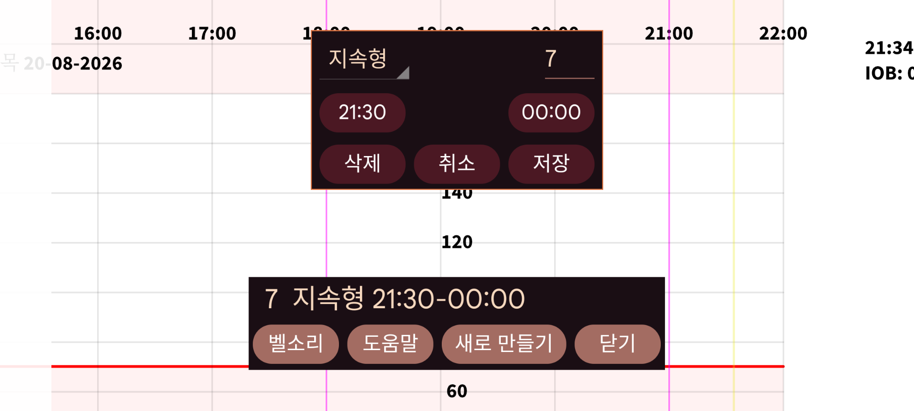

ar be de es fr hi it ja ko nl pl pt ru tr uk uz zh en
알림은 일정한 시간 범위 안에 특정 입력값을 입력하지 않았을 때 알려 줍니다.
새로 만들기 를 눌러 새 알림을 추가할 수 있습니다.
지정한 레이블 아래 지정한 양을 입력해야 하는 기간의 시작 시각과 종료 시각을 지정합니다.
종료 시각이 되면 프로그램은 시작 시각 이후 지정한 레이블 아래 최소한 이 양을 입력했는지 확인합니다. 입력하지 않았다면 알림을 표시하고 벨소리를 재생합니다.
예를 들어 다음과 같이 지정하면:
Levemir 6.0
21:30 - 23:55
같은 날 21:30 이후 Levemir를 최소 6단위 입력하지 않았을 경우 23:55 이후 알림을 받습니다.
이미 지정한 알림은 목록에 표시됩니다. 눌러서 편집할 수 있습니다.
정상적으로 작동한다면 Android를 재부팅한 뒤 사용자가 Juggluco를 직접 시작하지 않아도 알림이 작동합니다.
일부 Huawei 기기에서는 부팅할 때 프로그램을 시작할 수 있도록 허용해야 합니다. Android 설정→배터리→앱 실행에서 설정합니다. 여기에서 Juggluco를 수동 관리 로 선택하여 자동 실행 과 백그라운드 실행 을 켭니다. 사용자가 Juggluco를 시작하지 않은 상태에서도 재부팅 후 신호 손실 알람이 작동하려면 이 설정도 필요합니다.